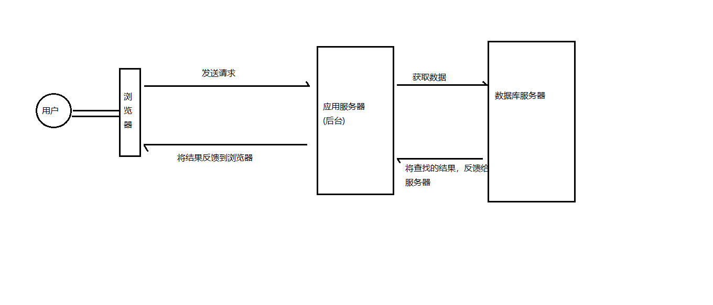
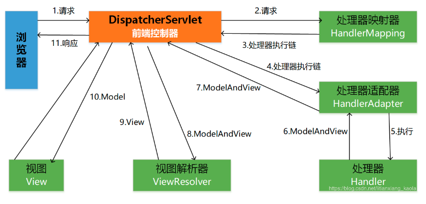
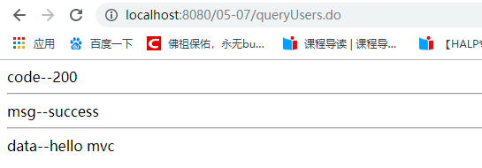
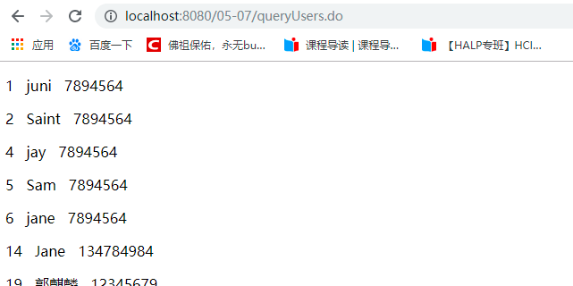
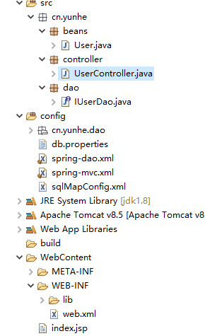
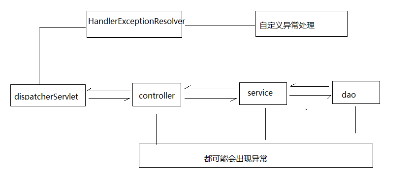
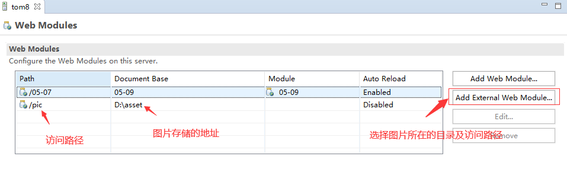
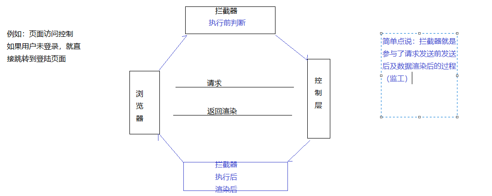

1、创建一个web项目
2、关联jar包
spring5.0 ：
spring-aop、spring-beans、spring-tx、spring-core、spring-context、
spring-jdbc、
spring-web、
spring-expression、spring-test、spring-jcl、spring-aspect、aop联盟
mybatis
mybatis、mybatis-spring
数据库
mysql-connector
web
servlet-api、jsp
PageHelper
pagehelper5.x、jsqlparser
3、创建pojo、dao层
4、创建sqlMapConfig.xml--Mybatis的配置文件
5、创建applicationContext.xml文件--spring的配置文件
6、创建业务层
7、测试(以查询为例)
前台负责和用户交互，后台用来和前台交互及数据库做数据操作(数据搬运工)
前台 html、css、js、jquery、layui、jsp
后台 Java、javaweb
数据库 MySQL、Oracle
后台和数据库 jdbc、MyBatis
简化业务处理 Spring

是Spring系列的产品之一，主要通过MVC的设计模式，更加清晰明了的处理后台业务与前台的交互问题
市面上目前所常用的系统架构设计模式：MVC、MVP、MVVM
三层架构
数据层 jdbc、Mybatis、Hibernate
业务层 Spring
视图层 SpringMVC、Struts2
MVC设计模式
M：Model(模型) bean、数据层、业务层
V：View(视图) html、jsp
C：Control(控制) 逻辑层
面试题：说说什么是MVC模式

流程：
（1）首先浏览器发送请求——>DispatcherServlet，前端控制器收到请求后自己不进行处理，而是委托给其他的解析器进行处理，作为统一访问点，进行全局的流程控制；
（2）DispatcherServlet——>HandlerMapping，处理器映射器将会把请求映射为HandlerExecutionChain对象（包含一个Handler处理器对象、多个HandlerInterceptor拦截器）对象；
（3）DispatcherServlet——>HandlerAdapter，处理器适配器将会把处理器包装为适配器，从而支持多种类型的处理器，即适配器设计模式的应用，从而很容易支持很多类型的处理器；
（4）HandlerAdapter——>调用处理器相应功能处理方法，并返回一个ModelAndView对象（包含模型数据、逻辑视图名）；
（5）ModelAndView对象（Model部分是业务对象返回的模型数据，View部分为逻辑视图名）——> ViewResolver， 视图解析器将把逻辑视图名解析为具体的View；
（6）View——>渲染，View会根据传进来的Model模型数据进行渲染，此处的Model实际是一个Map数据结构；
（7）返回控制权给DispatcherServlet，由DispatcherServlet返回响应给用户，到此一个流程结束
三大组件：
处理器映射器：处理器映射会根据请求所携带的 URL 信息来进行决策(分析应该去哪找功能)
处理器适配器：根据映射器返回给前端控制器的请求信息去适配对应的功能
视图解析器：解析返回的ModelAndView
步骤：
1、导入相关的jar (SpringMVC是Spring的一个方向的延申，使用时需要在Spring的基础上操作)
spring-core、spring-beans、spring-expression、spring-jcl、spring-test、spring-context
spring-web、spring-webmvc、spring-aop
2、配置DispatcherServlet(SpringMVC本质还是通过servlet来进行请求及响应的处理，SpringMVC中的前端控制器是不需要程序员手动创建的，只需要在tomcat容器初始化时进行加载即可，因为需要通过servlet去读取配置文件，因此在加载DispatcherServlet时就需要找到对应的配置文件)
<!-- 配置前端控制器 --><servlet><servlet-name>DispatcherServlet</servlet-name><servlet-class>org.springframework.web.servlet.DispatcherServlet</servlet-class><!-- 指定配置文件的加载地址 --><init-param><param-name>contextConfigLocation</param-name><param-value>classpath:springMVC.xml</param-value></init-param></servlet><servlet-mapping><servlet-name>DispatcherServlet</servlet-name><!--指定拦截请求的规则--><url-pattern>*.do</url-pattern></servlet-mapping>3、创建配置文件(因为SpringMVC的使用需要Spring的支持，同时需要使用相关的注解)
xxxxxxxxxx<beans xmlns="http://www.springframework.org/schema/beans"xmlns:xsi="http://www.w3.org/2001/XMLSchema-instance"xmlns:context="http://www.springframework.org/schema/context"xsi:schemaLocation="http://www.springframework.org/schema/beanshttp://www.springframework.org/schema/beans/spring-beans.xsdhttp://www.springframework.org/schema/contexthttp://www.springframework.org/schema/context/spring-context.xsd"><!-- 配置扫描 --><context:component-scan base-package="cn.yunhe.controller"/></beans>4、接收请求并根据请求执行对应的业务，反馈结果(将视图和数据模型返回出去--ModelAndView)
xxxxxxxxxxpublic class UserController {//RequestMapping指定请求的名称("queryUsers.do")public ModelAndView queryUsers() {//此处做对应的业务逻辑---调用查询所有用户信息的功能ModelAndView mv = new ModelAndView();mv.addObject("code", 200);mv.addObject("msg", "success");mv.addObject("data", "hello mvc");mv.setViewName("index.jsp");return mv;}}5、在视图中渲染数据进行交互
xxxxxxxxxx<% page language="java" contentType="text/html; charset=UTF-8"pageEncoding="UTF-8"%><html><head><meta charset="UTF-8"><title>Insert title here</title></head><body>code--${code }<hr>msg--${msg }<hr>data--${data }</body></html>6、测试--启动tomcat

目标：通过SSM的形式实现数据列表的展示效果
步骤：
1、导入jar
spring-core、spring-beans、spring-expression、spring-jcl、spring-test、spring-context
spring-web、spring-webmvc、spring-aop、spring-tx、spring-jdbc、spring-aspect、aop联盟、
织入、mybatis、mybatis-spring、mysql-connector-java
2、创建bean、dao层，指定要做的功能
xpublic interface IUserDao {/*** 查询用户列表* @return*/List<User> queryUsers();}3、创建Mybatis的配置文件及数据库文件
xxxxxxxxxx<configuration><!-- 配置别名 --><typeAliases><package name="cn.yunhe.beans"/></typeAliases></configuration>xxxxxxxxxxjdbc.driver=com.mysql.jdbc.Driverjdbc.url=jdbc:mysql:///shopjdbc.username=rootjdbc.password=777777774、创建Spring的配置文件
xxxxxxxxxx<beans xmlns="http://www.springframework.org/schema/beans"xmlns:xsi="http://www.w3.org/2001/XMLSchema-instance"xmlns:context="http://www.springframework.org/schema/context"xmlns:tx="http://www.springframework.org/schema/tx"xmlns:aop="http://www.springframework.org/schema/aop"xsi:schemaLocation="http://www.springframework.org/schema/beanshttp://www.springframework.org/schema/beans/spring-beans.xsdhttp://www.springframework.org/schema/contexthttp://www.springframework.org/schema/context/spring-context.xsdhttp://www.springframework.org/schema/txhttp://www.springframework.org/schema/tx/spring-tx.xsdhttp://www.springframework.org/schema/aophttp://www.springframework.org/schema/aop/spring-aop.xsd"><!-- 开启扫描 --><context:component-scan base-package="cn.yunhe.dao"/><context:property-placeholder location="classpath:db.properties"/><!-- 1、配置数据源 --><bean id="dataSource" class="org.springframework.jdbc.datasource.DriverManagerDataSource"><property name="driverClassName" value="${jdbc.driver}"/><property name="url" value="${jdbc.url}"/><property name="username" value="${jdbc.username}"/><property name="password" value="${jdbc.password}"/></bean><!-- 2、配置Mybatis的mapper扫描，批量加载 --><bean class="org.mybatis.spring.mapper.MapperScannerConfigurer"><property name="basePackage" value="cn.yunhe.dao"/><property name="sqlSessionFactoryBeanName" value="ssf"/></bean><!-- 3、创建SqlSessionFactory的实例 --><bean id="ssf" class="org.mybatis.spring.SqlSessionFactoryBean"><!-- 3.1 加载Mybatis的相关配置 --><property name="configLocation" value="classpath:sqlMapConfig.xml"/><!-- 3.2 关联数据源 --><property name="dataSource" ref="dataSource"/></bean><!-- 4、声明式事务 --><bean id="txManager" class="org.springframework.jdbc.datasource.DataSourceTransactionManager"><property name="dataSource" ref="dataSource"></property></bean><!-- 5、事务管理策略 --><tx:advice id="txAdvice" transaction-manager="txManager"><tx:attributes><tx:method name="query*" read-only="true"/><tx:method name="insert*" propagation="REQUIRED"/><tx:method name="add*" propagation="REQUIRED"/></tx:attributes></tx:advice><!-- 6、织入事务 --><aop:config><aop:pointcut expression="execution(* cn.yunhe.dao..*(..))" id="myPointCut"/><aop:advisor advice-ref="txAdvice" pointcut-ref="myPointCut"/></aop:config></beans>5、配置前端控制器
xxxxxxxxxx<!-- 配置前端控制器 --><servlet><servlet-name>DispatcherServlet</servlet-name><servlet-class>org.springframework.web.servlet.DispatcherServlet</servlet-class><!-- 指定配置文件的加载地址 --><init-param><param-name>contextConfigLocation</param-name><param-value>classpath:spring*.xml</param-value></init-param></servlet><servlet-mapping><servlet-name>DispatcherServlet</servlet-name><url-pattern>*.do</url-pattern></servlet-mapping>6、创建接收和处理请求的功能
xxxxxxxxxxpublic class UserController {IUserDao userDao;("queryUsers.do")public ModelAndView queryUsers() {ModelAndView mv = new ModelAndView();Map<String,Object> map = new HashMap<>();List<User> userList = userDao.queryUsers();map.put("code", 0);map.put("msg", "success");map.put("count", userList.size());map.put("data", userList);mv.addAllObjects(map);mv.setViewName("index.jsp");return mv;}}7、测试--启动tomcat

8、项目目录结构

配置视图解析器的前缀和后缀
xxxxxxxxxx
<!-- 配置扫描 -->
<context:component-scan base-package="cn.yunhe.controller"/>
<!-- 代替注解适配器和注解映射器的配置 -->
<mvc:annotation-driven/>
<!-- 配置视图解析器 -->
<bean class="org.springframework.web.servlet.view.InternalResourceViewResolver">
<property name="suffix" value=".jsp"></property>
</bean>
xxxxxxxxxx
("queryUser.do")
public ModelAndView queryUser(HttpServletRequest request,
HttpServletResponse response,
HttpSession session) {
ModelAndView mv = new ModelAndView();
//jsp的做法-获取地址栏中的参数的方法
String uid = request.getParameter("uid");
User user = userDao.queryUser(Integer.valueOf(uid));
mv.addObject("user",user);
mv.setViewName("order-view");
return mv;
}
变量名相同
xxxxxxxxxx
("queryUser.do")
public ModelAndView queryUser(int uid,HttpServletRequest request,
HttpServletResponse response,
HttpSession session) {
ModelAndView mv = new ModelAndView();
//jsp的做法-获取地址栏中的参数的方法
//String uid = request.getParameter("uid");
User user = userDao.queryUser(Integer.valueOf(uid));
mv.addObject("user",user);
mv.setViewName("order-view");
return mv;
}
可以支持基本数据类型及其对应的包装类
注意点：该形式要求方法中的参数名必须和请求的参数名一致，该参数必须要有值
变量名不同
@RequestParam
name：请求地址中的参数名
required：是否必须有值，默认为true
defaultValue：设置默认值
xxxxxxxxxx
("queryUser.do")
public ModelAndView queryUser((name = "uid",required = false,defaultValue = "1") int id,
HttpServletRequest request,
HttpServletResponse response,
HttpSession session) {
ModelAndView mv = new ModelAndView();
//jsp的做法-获取地址栏中的参数的方法
//String uid = request.getParameter("uid");
User user = userDao.queryUser(id);
mv.addObject("user",user);
mv.setViewName("order-view");
return mv;
}
注意点：使用pojo类型自动映射要求表单中的字段名和实体类中的属性名保持一致
xxxxxxxxxx
("updateUser.do")
public ModelAndView updateUser(User user) {
ModelAndView mv = new ModelAndView();
int result = userDao.updateUser(user);
mv.addObject("result", result);
mv.setViewName("edit");
return mv;
}
xxxxxxxxxx
<form class="layui-form" action="updateUser.do" method="post">
<div class="layui-form-item">
<label for="L_email" class="layui-form-label">
<span class="x-red">*</span>用户ID</label>
<div class="layui-input-inline">
<input type="text" id="uid" name="uid" value="${user.uid}" class="layui-input"></div>
</div>
<div class="layui-form-item">
<label for="L_username" class="layui-form-label">
<span class="x-red">*</span>用户姓名</label>
<div class="layui-input-inline">
<input type="text" id="uname" name="uname" value="${user.uname}" class="layui-input"></div>
</div>
<div class="layui-form-item">
<label for="L_pass" class="layui-form-label">
<span class="x-red">*</span>联系方式</label>
<div class="layui-input-inline">
<input type="text" id="phone" name="phone" value="${user.phone}" class="layui-input"></div>
</div>
<div class="layui-form-item">
<label for="L_repass" class="layui-form-label">
<span class="x-red">*</span>家庭住址</label>
<div class="layui-input-inline">
<input type="text" id="address" name="address" value="${user.address}" class="layui-input"></div>
</div>
<div class="layui-form-item">
<label for="L_repass" class="layui-form-label"></label>
<button class="layui-btn" lay-filter="add" lay-submit="">修改</button></div>
</form>
xxxxxxxxxx
public class Custom {
private User user;
public User getUser() {
return user;
}
public void setUser(User user) {
this.user = user;
}
}
xxxxxxxxxx
("updateUserCustom.do")
public ModelAndView updateUserCustom(Custom custom) {
ModelAndView mv = new ModelAndView();
int result = userDao.updateUser(custom.getUser());
mv.addObject("result", result);
mv.setViewName("edit");
return mv;
}
xxxxxxxxxx
<form class="layui-form" action="updateUserCustom.do" method="post">
<div class="layui-form-item">
<label for="L_email" class="layui-form-label">
<span class="x-red">*</span>用户ID</label>
<div class="layui-input-inline">
<input type="text" id="uid" name="user.uid" value="${user.uid}" class="layui-input"></div>
</div>
<div class="layui-form-item">
<label for="L_username" class="layui-form-label">
<span class="x-red">*</span>用户姓名</label>
<div class="layui-input-inline">
<input type="text" id="uname" name="user.uname" value="${user.uname}" class="layui-input"></div>
</div>
<div class="layui-form-item">
<label for="L_pass" class="layui-form-label">
<span class="x-red">*</span>联系方式</label>
<div class="layui-input-inline">
<input type="text" id="phone" name="user.phone" value="${user.phone}" class="layui-input"></div>
</div>
<div class="layui-form-item">
<label for="L_repass" class="layui-form-label">
<span class="x-red">*</span>家庭住址</label>
<div class="layui-input-inline">
<input type="text" id="address" name="user.address" value="${user.address}" class="layui-input"></div>
</div>
<div class="layui-form-item">
<label for="L_repass" class="layui-form-label"></label>
<button class="layui-btn" lay-filter="add" lay-submit="">修改</button></div>
</form>
xxxxxxxxxx
<!-- 字符编码过滤器 -->
<filter>
<filter-name>encoding</filter-name>
<filter-class>org.springframework.web.filter.CharacterEncodingFilter</filter-class>
<init-param>
<param-name>encoding</param-name>
<param-value>utf-8</param-value>
</init-param>
</filter>
<filter-mapping>
<filter-name>encoding</filter-name>
<url-pattern>/*</url-pattern>
</filter-mapping>
@RequestMapping
@RequestMapping(value = "queryUsers.do",method = {RequestMethod.POST,RequestMethod.GET})
@RequestMapping在类上使用时出现静态资源被过滤的问题（待处理）
ModelAndView 数据+视图 很强大，万能 （没有分离）
String 视图（数据交给Model） 更符合MVC的模式(分离)
xxxxxxxxxx(value = "/queryUsers.do",method = {RequestMethod.POST,RequestMethod.GET})public String queryUsers(Model model) {List<User> userList = userDao.queryUsers();//request.setAttribute("data",userList)model.addAttribute("data", userList);return "order-list";}void ajax--json数据交互
在项目运行过程中，可能会出现一些预知异常和运行时异常
预知异常：程序员知道的可能会出现的异常
运行时异常：在程序运行过程中出现的未知的异常
1、在项目中无论是dao、service、controller都有可能出现异常
2、项目是打成war包放在tomcat服务器上的，tomcat在linux系统上部署的

步骤：
1、创建异常类实现HandlerExceptionResolver
xxxxxxxxxxpublic class MyException implements HandlerExceptionResolver{public ModelAndView resolveException(HttpServletRequest request, //请求信息HttpServletResponse response, //相应信息Object obj,//异常信息 包名+类名+方法名+参数类型Exception e) {ModelAndView mav = new ModelAndView();mav.addObject("error", "未知异常");mav.setViewName("error");return mav;}}2、配置异常处理器让SpringMVC识别
xxxxxxxxxx<bean id="handlerExceptionResolver" class="cn.yunhe.exception.MyException"></bean>3、创建一个jsp页面用于出现错误时呈现给用户看的内容
如果按照之前jsp的上传形式将图片文件放在打包后的tomcat目录下，那么一旦项目重新打包，那之前的图片就不存在了，所以通常会将图片存储在一个图片服务器上等，此处模拟，将图片存储本地磁盘上的某个文件夹中(图片服务器：将图片存储在linux系统中的某个文件夹中)
1、需要给到一个虚拟路径用于访问

2、上传图片-d:\asset目录
表单中要求请求方式为post，需要加上enctype="multipart/form-data"
xxxxxxxxxx<form class="layui-form" action="../user/updateUserCustom2.do" enctype="multipart/form-data" method="post"><div class="layui-form-item"><label for="L_email" class="layui-form-label"><span class="x-red">*</span>用户ID</label><div class="layui-input-inline"><input type="text" id="uid" name="user.uid" value="${user.uid}" class="layui-input"></div></div><div class="layui-form-item"><label for="L_username" class="layui-form-label"><span class="x-red">*</span>用户姓名</label><div class="layui-input-inline"><input type="text" id="uname" name="user.uname" value="${user.uname}" class="layui-input"></div></div><div class="layui-form-item"><label for="L_pass" class="layui-form-label"><span class="x-red">*</span>联系方式</label><div class="layui-input-inline"><input type="text" id="phone" name="user.phone" value="${user.phone}" class="layui-input"></div></div><div class="layui-form-item"><label for="L_repass" class="layui-form-label"><span class="x-red">*</span>家庭住址</label><div class="layui-input-inline"><input type="text" id="address" name="user.address" value="${user.address}" class="layui-input"></div></div><div class="layui-form-item"><label for="L_repass" class="layui-form-label"><span class="x-red">*</span>上传图片</label><div class="layui-input-inline"><input type="file" name="multipartFile"></div></div><div class="layui-form-item"><label for="L_repass" class="layui-form-label"></label><button class="layui-btn" lay-filter="add" lay-submit="">修改</button></div></form>3、在controller层接收请求解析图片(注意：需要jar/ commons-fileupload.jar commons-io.jar)
xxxxxxxxxx("/updateUserCustom2.do")public ModelAndView updateUserCustom2(Custom custom,MultipartFile multipartFile) throws Exception {ModelAndView mv = new ModelAndView();//避免名字冲突，给上传的图片生成一个随机名字String name = UUID.randomUUID().toString().replace("-", "");String fileName = multipartFile.getOriginalFilename();String sufix = fileName.substring(fileName.lastIndexOf("."), fileName.length());String newName = name + sufix;//将图片写入到指定的路径中multipartFile.transferTo(new File("D:\\asset\\"+newName));mv.addObject("picName", newName);mv.setViewName("show");return mv;}4、配置MultipartFile类型解析
xxxxxxxxxx<!-- 配置multipartResolver解析器 --><bean id="multipartResolver" class="org.springframework.web.multipart.commons.CommonsMultipartResolver"><!-- 设置上传图片的最大值 --><property name="maxUploadSize" value="5242880"></property></bean>5、根据配置的虚拟路径在页面中回显
xxxxxxxxxx<% page language="java" contentType="text/html; charset=UTF-8"pageEncoding="UTF-8"%><html><head><meta charset="UTF-8"><title>Insert title here</title></head><body><img src="/pic/${picName }"/></body></html>
流程：前台发送一个ajax请求，携带一个json数据，后台接收请求，直接将发送过来的json数据映射成一个实体类对象，再将接收到的数据以json的形式返回给前端
步骤：
1、需要给到SpringMVC使用的jackson相关的jar包
2、前端发送一个ajax请求
xxxxxxxxxx<button>click to ajax</button><script>$('button').click(function(){var jsonData = {"uid":1,"uname":"haha","upwd":"123456","phone":"1234564878","address":"我的期待您的你"};$.ajax({url:"/05-09/user/insertMethod.do",type:"post",//回调类型，后台返回给前台的数据类型dataType:"json",//发送给后台的数据类型contentType:"application/json;charset=utf-8",data:JSON.stringify(jsonData),success:function(data){console.log(data.uname);}})})</script>3、后台接收请求并进行数据处理
xxxxxxxxxx//@RequestBody将前台发送过来的json数据映射成Java对象//@ResponseBody将Java对象转换成json字符串返回("/insertMethod.do")public User insertMethod( User user) {System.out.println(user);return user;}
http://localhost:8080/05-09/user/queryUser.do?uid=1
http://localhost:8080/05-09/user/queryUser.do/1
xxxxxxxxxx("/{id}/query.do")public User queryUser2(("id") Integer id) {User user = userDao.queryUser(id);return user;}
拦截器类似于过滤器，可以设置拦截规则(拦截所有的请求)

xxxxxxxxxxpublic class Interceptor1 implements HandlerInterceptor{public boolean preHandle(HttpServletRequest request, HttpServletResponse response, Object handler)throws Exception {System.out.println("执行前1");return true;}public void postHandle(HttpServletRequest request, HttpServletResponse response, Object handler,ModelAndView modelAndView) throws Exception {System.out.println("执行后1");HandlerInterceptor.super.postHandle(request, response, handler, modelAndView);}public void afterCompletion(HttpServletRequest request, HttpServletResponse response, Object handler, Exception ex)throws Exception {System.out.println("页面渲染后1");HandlerInterceptor.super.afterCompletion(request, response, handler, ex);}}xxxxxxxxxx<!-- 拦截器配置 --><mvc:interceptors><mvc:interceptor><!-- 拦截规则 http://localhost:8080/05-10/user/queryUsers.do--><mvc:mapping path="/**"/><bean class="cn.yunhe.interceptor.Interceptor1"></bean></mvc:interceptor><mvc:interceptor><!-- 拦截规则 http://localhost:8080/05-10/user/queryUsers.do--><mvc:mapping path="/**"/><bean class="cn.yunhe.interceptor.Interceptor2"></bean></mvc:interceptor></mvc:interceptors>1、当有多个拦截器时，那么执行前的方法是按照拦截器的配置顺序执行的，其他的方法是按照配置顺序逆序执行；
2、当有多个拦截器时，如果有一个拦截器拦截了请求并返回false，那么后续的拦截器就不再执行，之前的拦截器中的postHandler方法也不再执行；
流程：用户直接访问列表页，判断用户是否登录，未登录就跳转到登录页面，登录成功后跳转到列表页
用户是否已登录，根据是否在session域中存储了用户名
步骤：
1、登录页面
xxxxxxxxxx<% page language="java" contentType="text/html; charset=UTF-8"pageEncoding="UTF-8"%><html><head><meta charset="UTF-8"><title>Insert title here</title></head><body><form action="${pageContext.request.contextPath}/user/login.do" method="post"><input type="text" name="uname"><input type="password" name="upwd"><input type="submit" value="login"></form></body></html>2、请求：跳转到登录页面的请求，登录页的登录请求
xxxxxxxxxx/*** 接收跳转到登录页的请求* @return*/(value="/login.do",method = RequestMethod.GET)public String login() {return "login";}/*** 表单提交时发送的请求* 登录成功后再次发送列表页的请求地址* @param uname* @param session* @return*/(value="/login.do",method = RequestMethod.POST)public String login2(String uname,HttpSession session) {session.setAttribute("uname", uname);return "redirect:/user/queryUsers.do";}3、拦截器：拦截所有的请求(判断是否是跳转页登录请求)
xxxxxxxxxxpublic class Interceptor1 implements HandlerInterceptor{public boolean preHandle(HttpServletRequest request, HttpServletResponse response, Object handler)throws Exception {//配置的是拦截所有的请求//http://localhost:8080/05-11/user/login.do//区别当前的请求是否是login.do，需要拿到当前的请求地址//URL:http://localhost:8080/05-11/user/login.do//URI:05-11/user/login.doString uri = request.getRequestURI();if(!uri.contains("login.do")) {//判断当前用户是否是已登录的状态String uname = (String) request.getSession().getAttribute("uname");if(null == uname) {response.sendRedirect(request.getContextPath() + "/user/login.do");return false;}}return true;}public void postHandle(HttpServletRequest request, HttpServletResponse response, Object handler,ModelAndView modelAndView) throws Exception {System.out.println("执行后1");HandlerInterceptor.super.postHandle(request, response, handler, modelAndView);}public void afterCompletion(HttpServletRequest request, HttpServletResponse response, Object handler, Exception ex)throws Exception {System.out.println("页面渲染后1");HandlerInterceptor.super.afterCompletion(request, response, handler, ex);}}